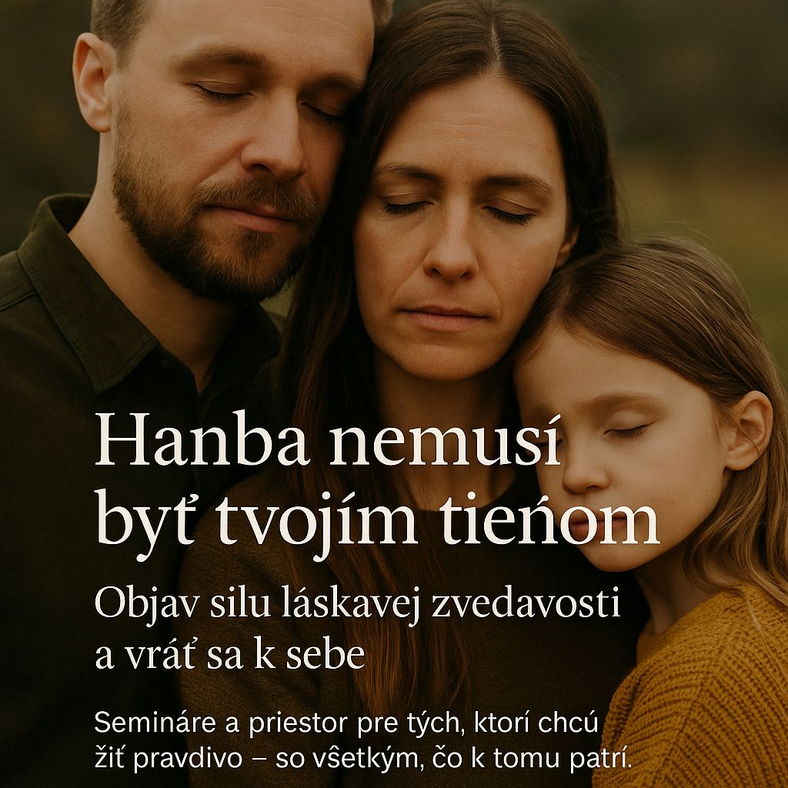
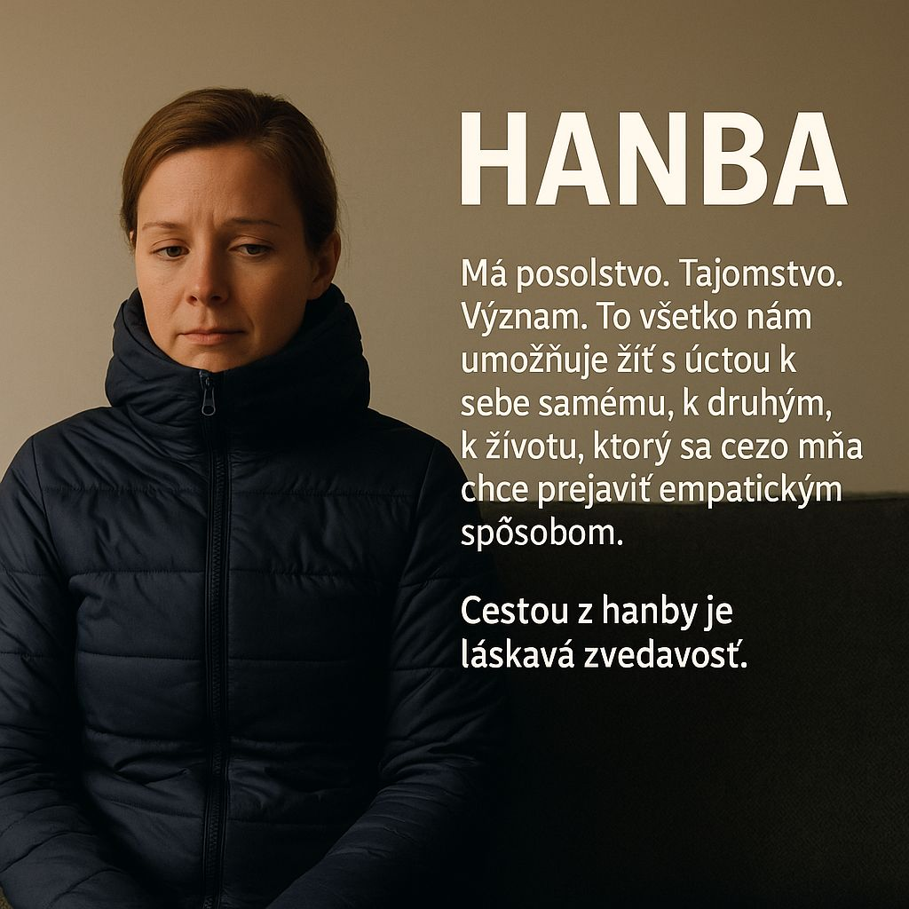
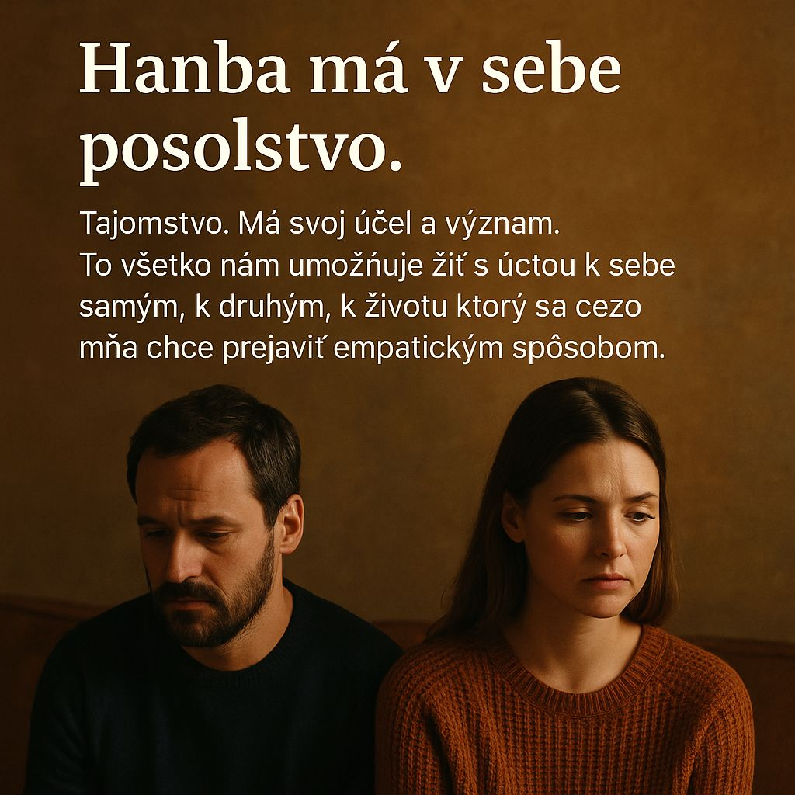

O hanbe sa často hovorí ako o pocite. Ale hanba nie je len chvíľkové trápne pocity. Je hlbšia. Hanba je tiché presvedčenie, že je s nami niečo zle. Že nie sme dosť. Že nie sme hodní lásky, pozornosti alebo rešpektu. Nie je to emócia, ktorú len tak precítime a ide preč – je to zakorenený obraz o sebe, často nevedome vytvorený už v ranom detstve.
Hanblivosť nie je hanba
Možno poznáte tú chvíľu: idete na rande a cítite sa hanblivo. Cítite zraniteľnosť, neistotu, možno motýle v bruchu. Ale to ešte nie je hanba. Keby v tom bola hanba, na to rande by ste vôbec nešli. Nie preto, že by ste nechceli – ale preto, že by ste verili, že si ho nezaslúžite. Hanba dokáže potlačiť naše túžby ešte skôr, než si ich dovolíme uvedomiť.
Aj preto vznikol tento text. Sedel som doma v šuštiakovej bunde až po krk, akoby som potreboval chrániť telo aj dušu. V duchu som sa usmial – vyzerám ako kozmonaut, a píšem o hanbe. Písať o nej je výzva. Nielen intelektuálna. Hovorím síce všeobecne, ale téma sa ma dotýka. A možno práve preto má zmysel ju otvoriť.
Hanba ako systémový nástroj: „Zahanbuj a panuj“

Mnohí z nás si hanbu mýlia so zahanbovaním. Rozdiel je podstatný.
• Hanba vychádza zvnútra. Je to intímny signál, ktorý nás upozorňuje, že sa deje niečo, čo ide proti našej vnútornej pravde alebo integrite.
• Zahanbovanie prichádza zvonka. Je to tlak spoločnosti, rodiny, školy či kultúry, ktorý nám dáva najavo: „Nie si dosť. Nezapadáš. Mal/a by si sa hanbiť.“
Zahanbovanie nás oddeľuje. Stávame sa poslušnými, snažíme sa zapadnúť. No cena za to je vysoká – vzdávame sa samých seba. Prispôsobíme sa, zamlčíme, zmrazíme city… len aby sme nevyčnievali.
Zahanbení ľudia sú ľahšie ovládateľní. Preto hanba bola – a stále je – nástrojom moci. A preto o nej potrebujeme hovoriť.
Hanba začína dávno predtým, než ju vieme pomenovať
Hanba nevzniká v dospelosti. Jej korene siahajú až do chvíľ, keď sme prišli na svet.
Bábätko potrebuje jediné: byť videné, cítené, láskavo prijaté. V očiach mamy, v dotyku, v prítomnosti. Ak tieto potreby nie sú naplnené, vzniká prvý jemný odtlačok – možno nie som hodný. Možno nie som v poriadku.
Voláme to štrukturálne násilie – keď systém (napr. zdravotníctvo) uprednostní efektivitu pred ľudskosťou. Keď je dôležitejšie zmerať dieťa než ho položiť na telo mamy. A to zanecháva stopy.
Štyri základné potreby, ktoré formujú našu dôveru v seba:
1. Uznanie – byť videný, cítený, rešpektovaný v tom, kým som.
2. Ochrana – cítiť bezpečie pred zraňujúcimi vplyvmi.
3. Príslušnosť – vedomie, že niekam patrím, že som vítaný.
4. Integrita – možnosť zostať verný sám sebe.
Keď tieto potreby nie sú naplnené, učíme sa „prežiť“ za cenu odpojenia. A hanba sa stáva neviditeľným tieňom, ktorý ovplyvňuje, ako sa vzťahujeme – k sebe, k druhým, k svetu.
Hanba ako pozvánka k zvedavosti

Hanba môže paralyzovať. Môže nás nútiť skrývať sa, prispôsobovať, zatvrdnúť. Ale ak ju začneme vnímať inak – ako signál, nie ako hrozbu – otvára sa priestor.
Zvedavosť je kľúč. Láskavá, úprimná zvedavosť, ktorá sa pýta: Čo sa vo mne deje? Prečo to tak cítim? Nie so zámerom zmeniť sa, ale porozumieť si.
Zvedavosť lieči. Vracia nás k sebe. Pomáha uvoľniť to, čo bolo zmrznuté. Vnáša pohyb tam, kde bol dlhý čas len strach.
Hanba ako dar: Strážca ľudskej dôstojnosti
Hanba má svoj význam. Môže byť regulátorom nášho správania, ak nie je zneužitá. Pomáha nám cítiť zodpovednosť, empatiu, čestnosť. Jej úloha nie je trestať, ale chrániť hodnoty. Dôstojnosť. Ľudskosť.
A práve preto má zmysel ju spoznávať. Učiť sa s ňou narábať. Vytvárať priestor, kde sa hanbiť nemusíme – a kde, ak hanba príde, môžeme ju prijať bez toho, aby nás zničila.
Semináre a priestor pre zmenu
Téma hanby je rozsiahla a citlivá. Ale zároveň oslobodzujúca. Keď o nej začneme hovoriť, prestáva mať nad nami moc. Preto vznikajú semináre, ktoré vytvárajú bezpečný priestor pre skúmanie dotyku, hanby, intimity a uznania.
Je to cesta, ktorá nie je rýchla. Ale je skutočná. A vedie domov – k sebe.
Záver
Hanba nemá byť väzením. Má byť sprievodcom. Ak ju spoznáme, môžeme sa cez ňu dostať k väčšiemu pochopeniu, úcte a láskavosti – voči sebe aj iným.
Láskavá zvedavosť nie je slabosť. Je to odvaha. Byť so sebou. A žiť naplno – aj s chybami, aj s neistotami, aj s tým, že sme len ľudia.